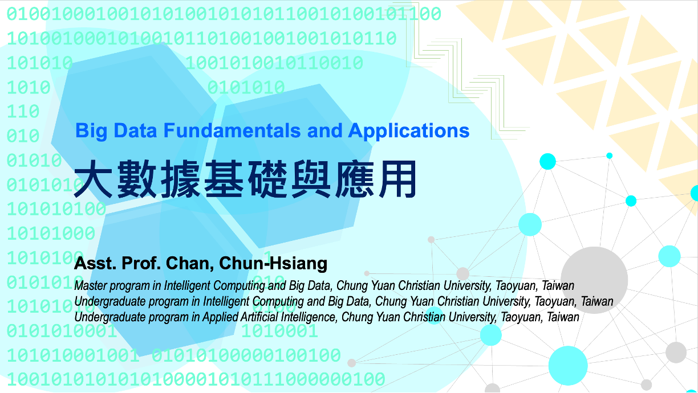

Big Data Fundamentals and Application @ CYCU
Course Content
The term "Big Data" has been popular in recent years, but the spirit and critical concept were usually misunderstood so that the investment in a data warehouse or analytic R&D cost could not reflect on revenue to the company. Therefore, we teach the concept, terminology, and technical skills within this course and attempt to stimulate brainstorming through several proposal practices and debates. Moreover, all students are required to leverage the data analytical approaches in the final project presentation.
Course Intro
 01 :: Course IntroductionContents: (1) About the course (2) Grading policy (3) 5W1H for big data (4) Potential issues
[Slide] Numerical Analysis I
02 :: Numerical Analysis I - SlideContents: (1) Introduction (2) General concept (3) Coding part
[Code] Numerical Analysis I
02-1 :: Numerical Analysis I - Basic ComputationContents: (1) Declare variables (2) Operator
[Code] Numerical Analysis I
02-2 :: Numerical Analysis I - Flow ControlContents: (1) if else (2) for loops (3) while loops (4) Nested loop
[Code] Numerical Analysis I
02-3 :: Numerical Analysis I - Declare a functionContents: (1) Define function (2) Recursive function
[Code] Numerical Analysis I
02-4 :: Numerical Analysis I - Matrix Computation (Numpy)Contents: (1) Generate sequence (2) Create arrays (3) Random numbers (4) Create arrays (5) Indexing (6)Change dimension of matrix (7) Calculation (8) Combining arrays (9) Splitting arrays (10) Descriptive statistics
[Code] Numerical Analysis I
02-5 :: Numerical Analysis I - Table Computation (Pandas)Contents: (1) Basic operation of pandas (2) Read an ods file (3) Datetime formatting (4) Reshape and merge tables (5) Real world problem (data cleaning)
[Slide] Numerical Analysis II
03 :: Numerical Analysis II - SlideContent: (1) Data Science Mindset (2) Visualization (3) Coding part
[Code] Visualization
03-1 :: Visualization (Matplotlib, seaborn, bokeh)Contents: (1) Scatter Plot (2) Line plot (3) Histogram (4) Bar plot (5) Boxplot (6) Subplot (7) Annotation (8) Heatmap (corr map) (9) Dist plot (10) kde plot
[Code] Python Statistics
03-2 :: Python Statistics (Scipy)Contents: (1) F test (2) t test (3) ANOVA (4) Kolmogorov-smirnov test (5) Ranksum
Principal Component Analysis – PCA
04 :: Principal Component Analysis – PCAContent: (1) Review (2) Why do we need dimension reduction (3) Mathematical explanation (4) Programming in Python (5) Coding part
[Code] Principal Component Analysis
03-3 :: Principal Component AnalysisContents: (1) Review (2) Why Do We Need Dimension Reduction? (3) PCA – Mathematical Explanation (4) PCA – Programming in Python (5) Part VIII Basic numerical methods (Scipy) (6) Part IX Advanced numerical methods (Scipy)
Statistical Analysis (I)
05 :: Descriptive Statistics – IndicatorsContent: (1) Introduction to statistics (2) Descriptive statistics (3) Central tendency (4) Dispersion (5) Heterogeneity (6) Shape
Statistical Analysis (II)
06 :: Descriptive Statistics – GraphContent: (1) Introduction to visualization (2) Line plot & scatter plot (3) 1D histogram (4) 2D histogram (5) Area plot (6) Stem plot (7) Boxplot (8) Stripe plot & swarm plot (9) Error bar plot (10) Pie chart (11) Bar chart (12) Rose plot & radar plot (13) Biplot & Control Chart (14) Forest plot (15) Q-Q plot (16) Combination plot
Statistical Analysis (III)
07 :: Hypothesis TestingContent: (1) Introduction (2) Road map of statistics (3) Hypothesis testing (4) Type I and type II errors
Statistical Analysis (IV)
08 :: Reliability & Validity AnalysesContent: (1) Reliability & validity analyses
Statistical Analysis (V)
09 :: Test of NormalityContent: (1) Inferential statistics (2) Test of normality: (a) Shapiro–Wilk test (b) Kolmogorov-Smirnov test (c) Pearson chi-squared test
Statistical Analysis (VI)
10 :: Parametric StatisticsContent: (1) Differences between parametric and nonparametric statistics (2) Parametric statistics: (a) F test (b) ANOVA (單因子變異數分析) (c) Post hoc (multiple comparison) (多重比較 | 事後檢定) (d) Z test (e) T-test (one sample, paired samples, and two independent samples)
Statistical Analysis (VII)
11 :: Non-parametric StatisticsContent: (1) Chi-squared test (2) Fisher's exact test (3) McNemar's test (4) Signed test (5) Wilcoxon signed rank test (6) Mann-Whitney U test (7) Wilcoxon rank sum test (8) Kruskal-Wallis test
Statistical Analysis (VIII)
12 :: Correlation AnalysisContent: (1) Pearson correlation coefficient (2) Biserial rb (3) Spearman rank coefficient (4) Tetrachoric correlation rtet (5) Point biserial rpb (6) Rank biserial rrb (7) Phi coefficient 𝜙 (8) Contingency coefficient (9) Cramér's V (10) Goodman and Kruskal's Lambda
Statistical Analysis (IX)
13 :: Regression AnalysisContent: (1) Correlation matrix (2) Sklearn linear regression (3) Multiple linear regression by scikit-learn (4) Polynomial regression by scikit-learn (5) Advanced linear regression by statsmodels (6) Backward elimination (7) Evaluation metrics